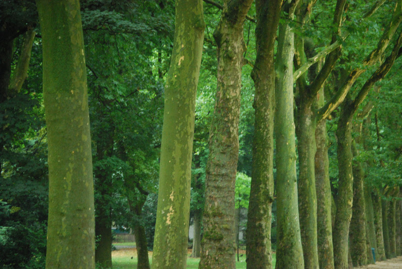
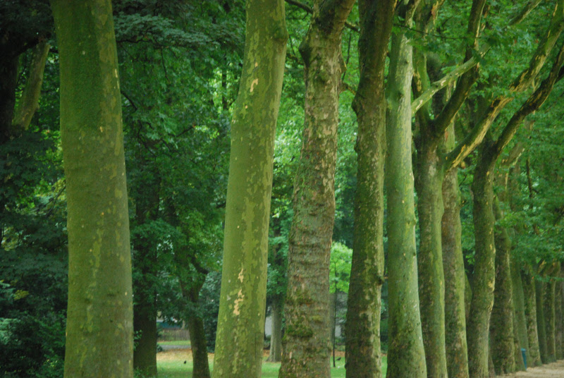

10 de xaneiro
Novidade 1
Accusantium consectetur, numquam ratione sed ut ipsa earum consequatur sunt quae officiis facere tempora nobis pariatur quibusdam non, cum harum. Expedita, doloribus!
Páxina desenvolvida por A22DavidCR para DIW - DAW 2025/26.
Establece dous breakpoints, a 576px y a 992px, nos que se produce un cambio no layout da páxina.
O proceso de desenvolvemeento foi levado a cabo comezando dende o deseño para pantallas pequenas


 

Accusantium consectetur, numquam ratione sed ut ipsa earum consequatur sunt quae officiis facere tempora nobis pariatur quibusdam non, cum harum. Expedita, doloribus!
Accusantium consectetur, numquam ratione sed ut ipsa earum consequatur sunt quae officiis facere tempora nobis pariatur quibusdam non, cum harum. Expedita, doloribus!
Accusantium consectetur, numquam ratione sed ut ipsa earum consequatur sunt quae officiis facere tempora nobis pariatur quibusdam non, cum harum. Expedita, doloribus!